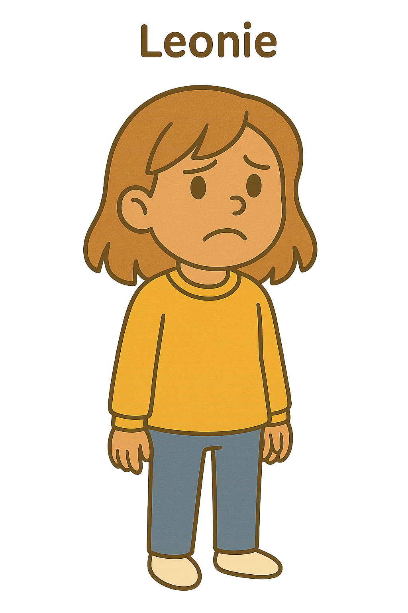
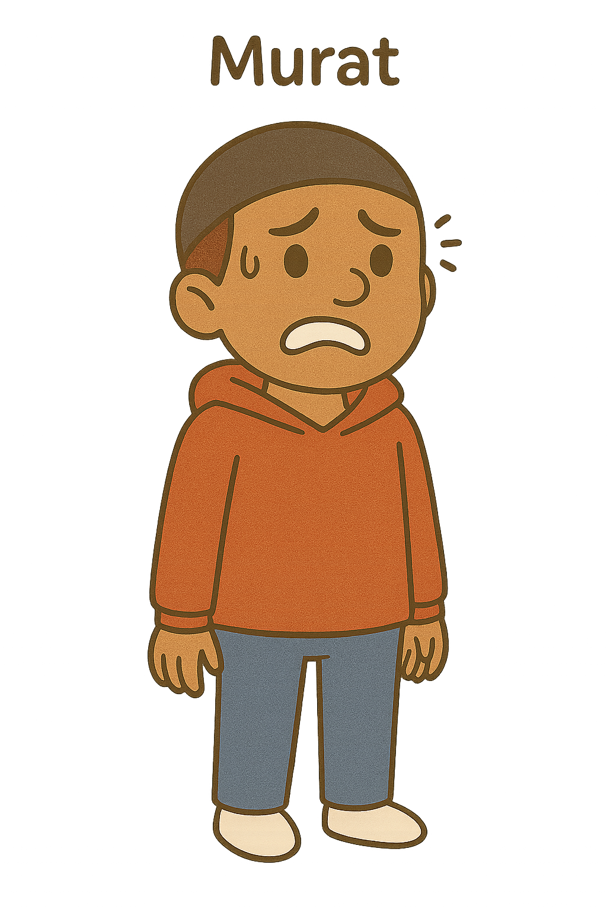
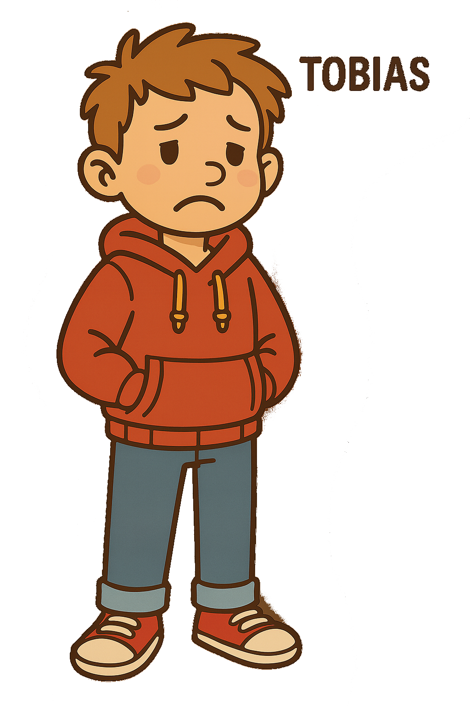

In fünf Fällen kannst du dich dem Thema Radikalisierung nähern. Ob aus Perspektive der Eltern, einer Lehrkraft,
einer Polizistin, einer Distanzierungsberaterin oder einer Mitarbeiterin in einem Demokratieförderprojekt. Probiere
aus, welche Konsequenzen deine Entscheidungen für die Entwicklung einer jungen, radikalisierten Person haben
können.
Samis Eltern machen sich Sorgen, dass er sich online radikalisieren könnte
Alinas Lehrkraft denkt, dass ihr neuer Freundeskreis einen radikalisierenden Einfluss auf
sie hat

Leonie gerät ins Visier der Sicherheitsbehörden

Eine Distanzierungsberaterin möchte Murat im Umgang mit seinem konservativen Elternhaus und
radikalen Freunden im Online-Bereich unterstützen

Eine Mitarbeiterin eines Demokratieprojekts versucht Tobias zu helfen, seinen politischen
Aktivismus nicht in den Extremismus abdriften zu lassen